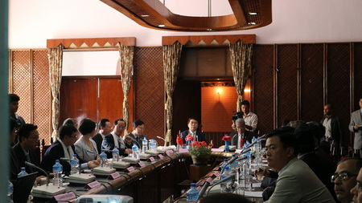
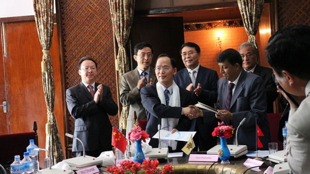
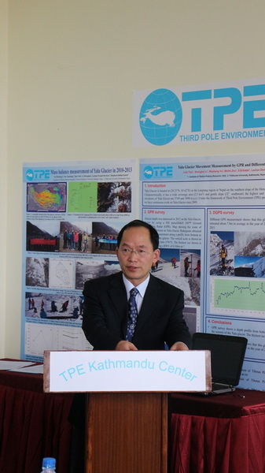
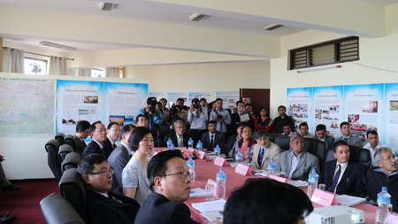
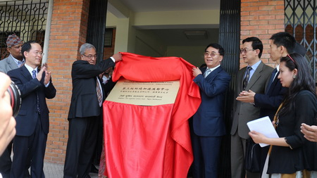

2014年4月7日，由白春礼院长带队，包括谭铁牛副秘书长、成都山地所崔鹏副所长、地理所张林秀研究员以及国际合作局王振宇处长、董麒研究员等中科院代表团一行8人访问尼泊尔特里布文大学，我所所长姚檀栋院士和马耀明副所长也随团参加访问。特里布文大学常务副校长希拉教授带领学校主要领导热情接待了中科院代表团并进行会谈。在双方会谈期间，我所所长姚檀栋院士介绍了“第三极环境（TPE）”国际计划，并在白春礼院长主持下与特里布文大学水文气象系签署了关于共建第三极环境加德满都中心的合作备忘录。
随后，白春礼院长一行在希拉教授等尼方人员陪同下，饶有兴致地参观了位于该校水文气象系的第三极环境加德满都中心，听取了中心执行主任梁尔源研究员所作的中尼双方依靠中心开展的双边合作及取得的科研进展报告。之后，在中尼双方代表见证下，双方举行了仪器捐赠仪式。
在听取中心所取得的进展之后，双方开展了坦诚讨论和交流。TPE计划联合主席姚檀栋院士介绍了第三极环境加德满都中心的定位。白春礼院长表示，中科院青藏高原所和尼泊尔特里布文大学依靠中心开展了务实、卓有成效的合作，希望双方能继续推进双边合作。白春礼院长强调，可以以第三极环境加德满都中心为基础进一步将其建设成为中科院的海外中心，辐射南亚地区国家。希拉教授对中科院长期以来与特里布文大学的合作表示支持与感谢，并承诺将继续支持第三极环境加德满都中心的发展。
讨论结束后，我所杨晓新副研究员还带领白春礼院长一行参观了第三极环境加德满都中心的介绍展板，并与中心的尼泊尔藉学生进行了友好交流。之后，白春礼院长和特里布文大学校长共同为该中心题字，勉励中尼科学家利用中心该平台继续加强合作。
参观结束前，白春礼院长和希拉教授共同为第三极环境加德满都中心正式揭牌并合影留念。中国驻尼泊尔大使吴春太陪同参加访问。

白春礼院长一行访问特里布文大学

中科院青藏高原所与特里布文大学水文气象系签署合作备忘录

姚檀栋所长介绍第三极环境加德满都中心整体情况

白春礼院长听取第三极环境加德满都中心汇报

白春礼院长为第三极环境加德满都中心揭牌